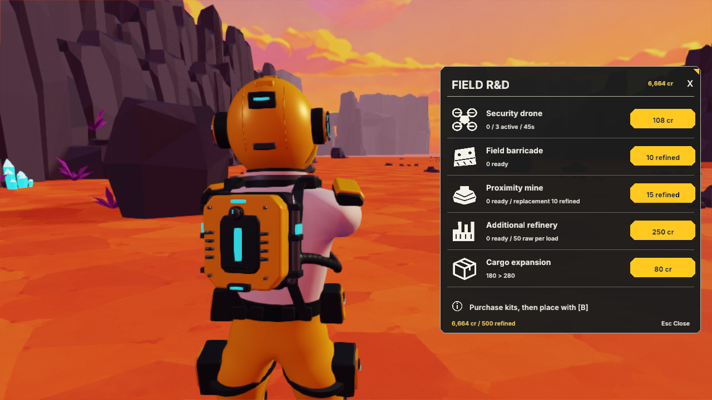
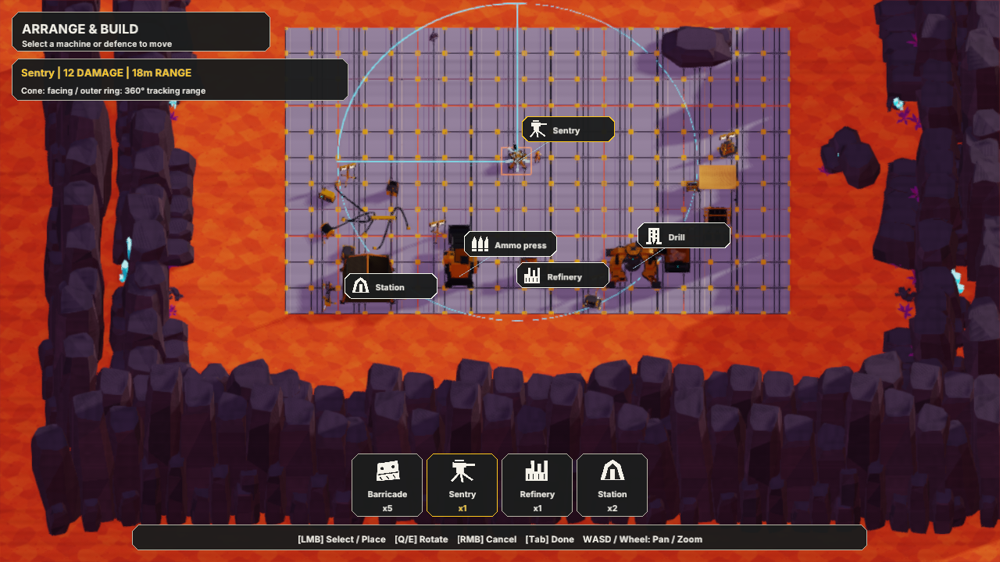
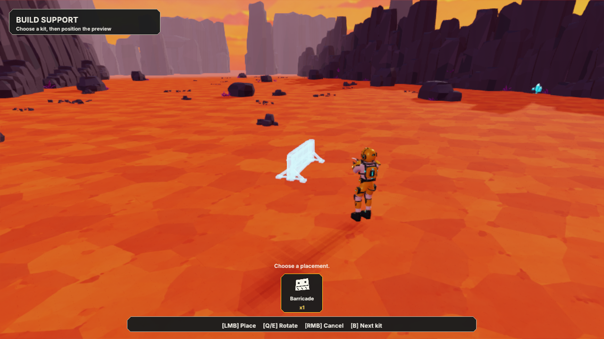
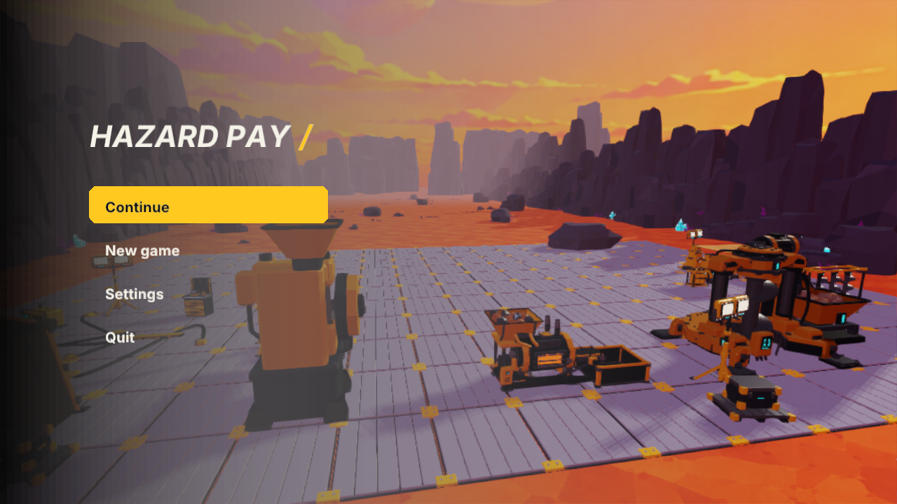
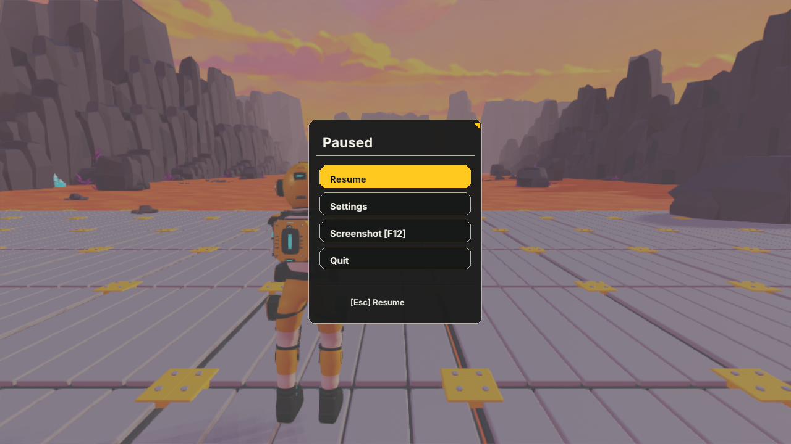
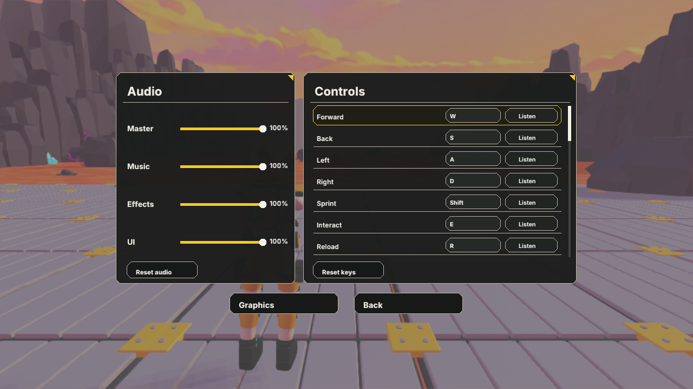
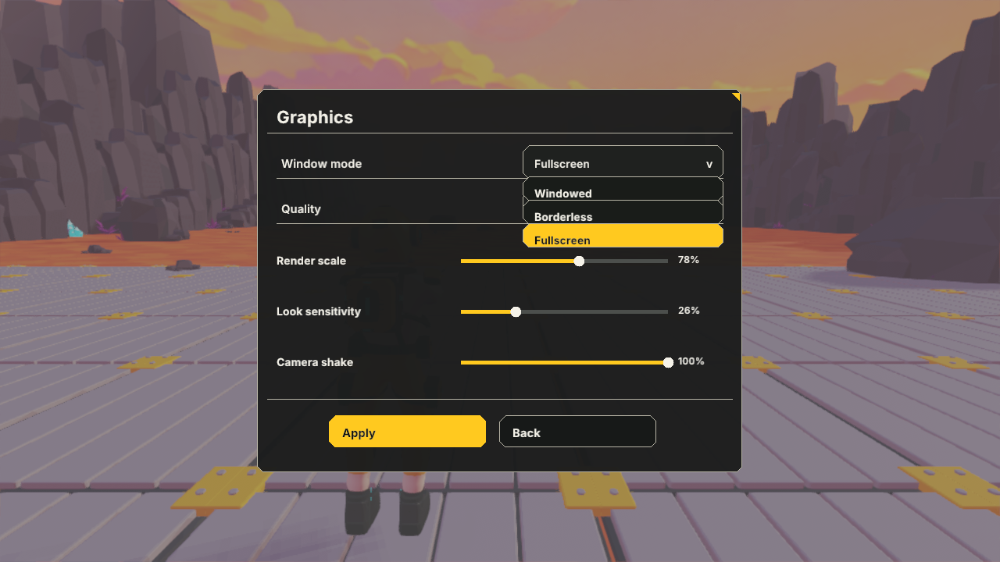
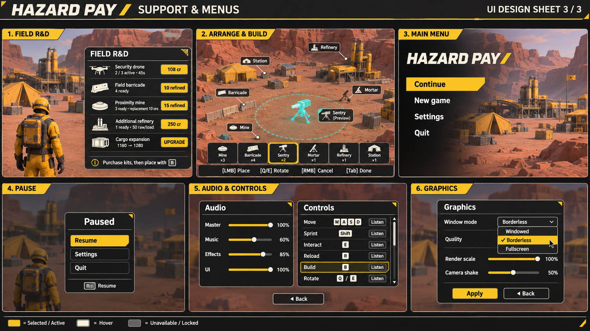

Installed Windows UI: compact Field R&D, arrangement object callouts and tray, kit placement tray, live-scene main menu, compact pause, paired Audio/Controls and Graphics. Click any image for the full-resolution native capture. Prices, stock and settings are live game values, rather than the illustrative numbers in the concept.
Existing workflows are retained: Tab rearranges existing objects; B or the defence shortcuts select new kits. Continuous placement, rotation, keyboard rebinding, scrollable controls, display modes and screenshot access remain available.








New white vector icons are available in the icons folder as editable SVG and runtime PNG. Official Inter Bold Italic was added for the main title; the existing SIL Open Font License is retained in project SourceArt.